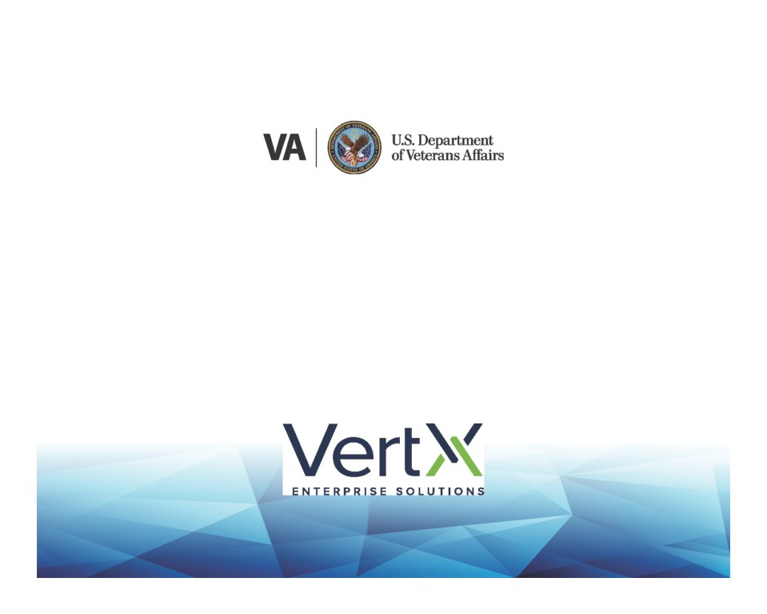
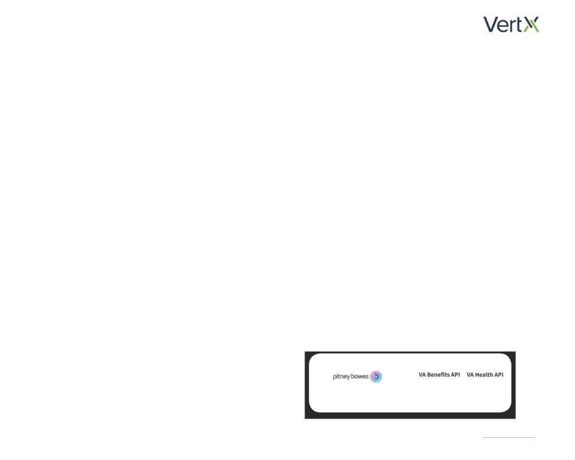
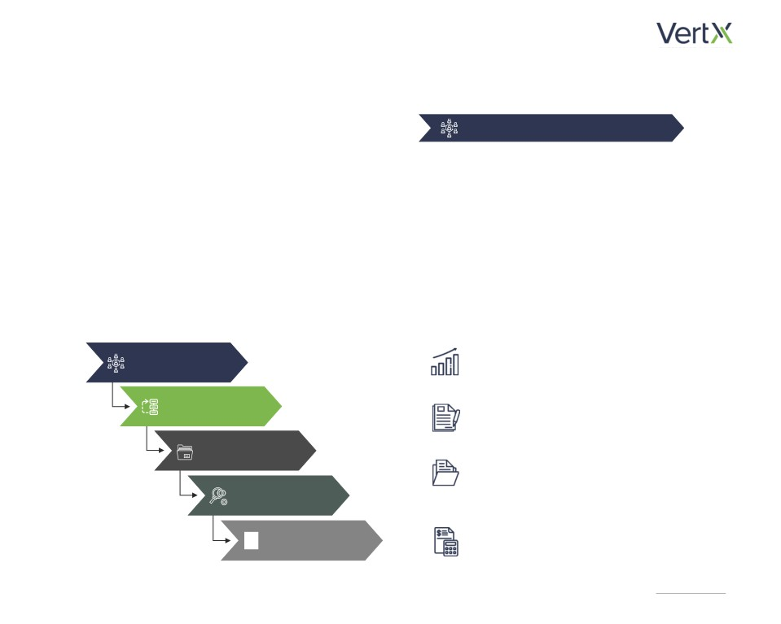
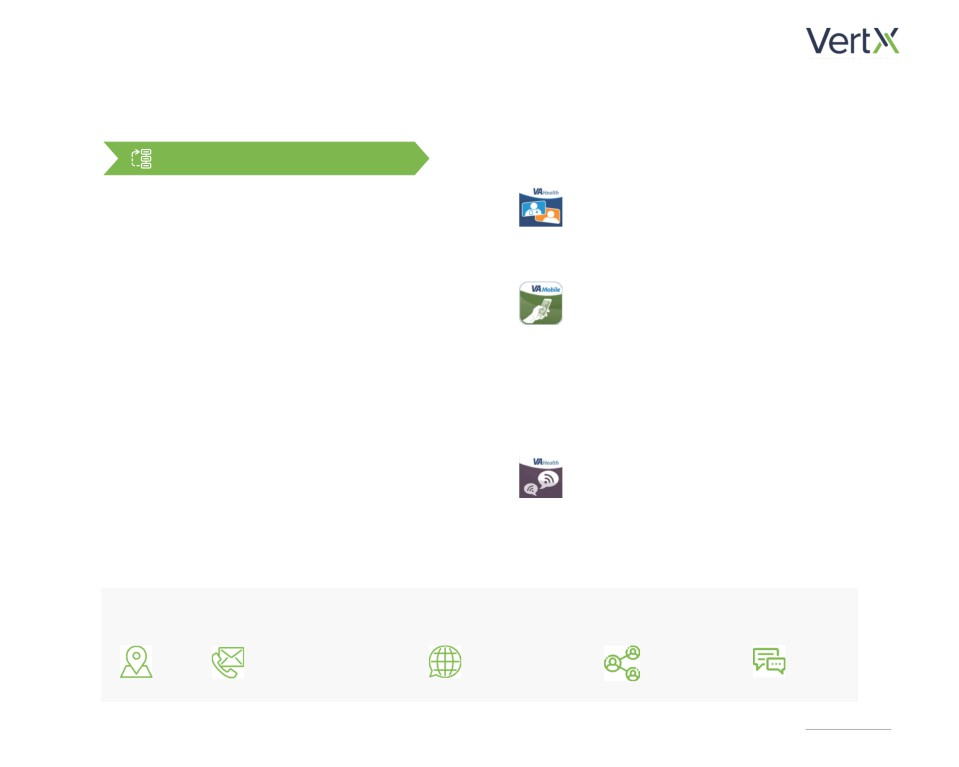
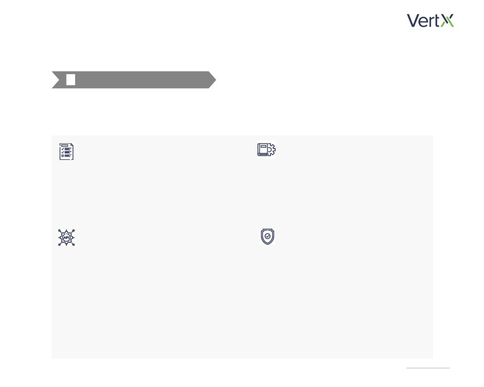
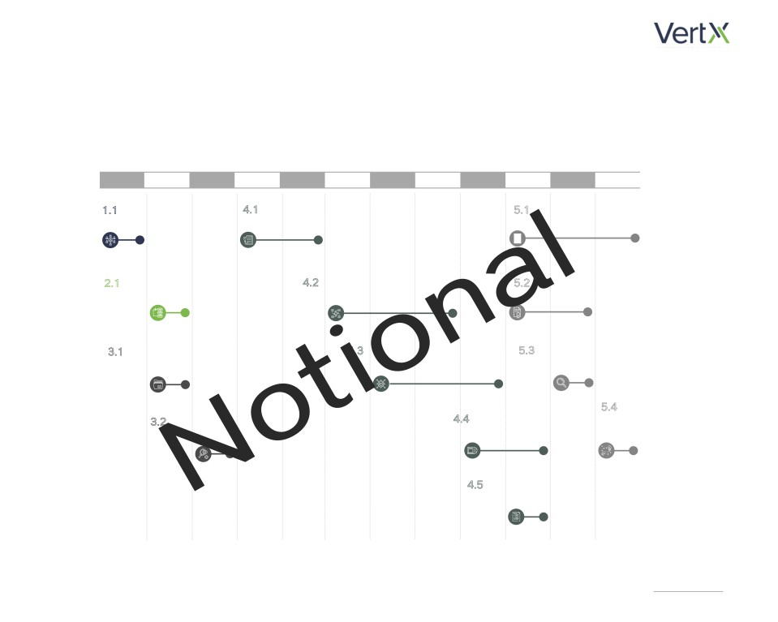

DEPARTMENT OF VETERANS AFFAIRS
VA API GOVERNANCE
LICENSE AND ENTITLEMENT MANAGEMENT
EXECUTIVE WHITEPAPER

Background
The Department of Veterans Affairs (VA) provides a wide
Tighter management and monitoring of API usage
variety of Application Programming Interfaces (APIs) that
standards will protect the VA in case of an IT audit
enable innovative and modern technology solutions for
and enable the organization to find cost-savings on
Veterans. As various VA teams and projects expand their
API usage through tier-based pricing structures.
development and usage of APIs to deliver mission critical
functionality, a greater need for governance is necessary.
Various IT Asset Management (ITAM) and Software
Asset Management (SAM) tools exist to manage en-
The VA requires a governance model that focuses on the
terprise licenses, however these are built for manag-
people, processes, and technologies associated with API
ing traditional software licenses, and would require
use to enable successful governance and management.
extensive customization to effectively manage APIs.
Existing API gateways and logging capabilities con-
tain the usage data that is essential to manage APIs,
however this information cannot be easily accessed.
Our Understanding
The VA requires a solution that can simply gather
We understand that the VA currently utilizes thousands
this disparate data, consolidate it into a centralized
of APIs throughout the organization. APIs are currently
database, and aggregate API data to enable action-
tracked manually with varying tracking methods for each
able insights that reduce the costs and risks associ-
project. Tools such as Microsoft Excel are commonly used,
ated with their use.
with no centralized tracking, monitoring, or governance
This Whitepaper Focuses on Restful Web Services such as:
mechanisms in place. This
Can lead to fines of
Externally Provided APIs
Internally Provided APIs
fragmented tracking lacks an
$150,000
enterprise-wide method to manage
per copyright infringed1
licensing utilization for APIs, which prevents the VA from
Externally provided APIs are
APIs developed by the VA that
used to get data or services from
can be consumed by other VA
accessing cost savings, and exposes the organization to
a source outisde the VA.
applications or by outside parties.
risks of fines and legal action.
VA API Governance
1

Our Approach
Establish Initial Governance Team
The VA faces unique challenges in developing a
Phase 1:
Establish Initial Governance Team
governance model to manage the breadth of APIs that
are currently in use throughout the organization. To
Organizations such as the VA have large and complex
efficiently manage this daunting task, the VA requires
technical landscapes, and software asset management
an automated solution. API data is currently disparate,
(SAM) and IT asset management (ITAM) programs
with data stored in varying API gateways and logs, and
are critical to serve as the backbone of a governance
without centralized usage records. Centralized API
model. We propose that the existing programs and
data is needed to establish a governance model, and an
governance teams should be expanded to include
automated data collection process will streamline the
responsibilities for the management and governance
process to establish this model. A multi-phase approach
of API license keys. The expanded governance bodies
is needed to establish this solution.
will have responsibilities in for the following areas as
they pertain to APIs:
Phase 1:
Discovery & Tracking - Identification and
Establish Initial
tracking of utilization metrics
Governance Team
Phase 2:
Application, Project, &
License Management - Maintenance of an
Customer Prioritization
inventory of licenses and contractual details
Phase 3:
Metrics Definition
& Data Collection
Audit Management - Confirm contract
Phase 4:
compliance and license usage with proactive
Tool Selection &
internal and vendor audits
Implementation
Phase 5:
Budgeting & Procurement - Centralize
Program Enhancement
& Expansion
reporting and forecasting for license renewals
for APIs throughout the organization
VA API Governance
2

Application, Project, & Customer Prioritization
Phase 2:
Potential starting candidates for governance include:
Application, Project, & Customer Prioritization
To manage the breadth of APIs that are already deployed
VA Video Connect
throughout the VA, we recommend a pragmatic approach
Telemedicine application that connects
that prioritizes and targets specific APIs and projects. To
Veterans with physicisians utilizing video chat.
narrow the focus initially, the VA should select a handful
of critical initiatives, projects, and applications in which
Civilian Health & Medocail Program of the
the VA is creating or consuming APIs.
Department of Veterans Affairs (CHAMPVA)
Pay Mobile App
The approach should be prioritized to focus on the
Enables Veterans to quickly view CHAMPVA
initiatives, projects, and applications that have the
medical codes, verify coverage status, and
highest level of API usage that can be directly or
determines reimbursement details.
indirectly traced to a cost. Projects with high levels of
API usage are typically web or mobile applications that
Annie App (for Clinicians & Veterans)
include industry-standard features that are expected by
Texting based application that enables
users, and should not be developed from scratch.
Clinicians to assign protocols to Veteran
patients, and provides Veterans with automated
reminders for self-care.
Application Features that Typically Utilize APIs
Address & Contact
Natural Language
Social Media
Speech
Maps
Information Verification
Processing
Integration
to Text
VA API Governance
3
Metrics Definition & Data Collection
Tool Selection & Implementation
Phase 3:
Phase 4:
Metrics Definition & Data Collection
Tool Selection & Implementation
Once applications and projects have been prioritized,
The data governance team will explore and analyze
the governance team should define success metrics
solutions that will enable the VA to efficiently
and begin gathering data from the prioritized
centralize these data utilizing a fully automated
applications. Metrics should include key performance
process. This evaluation will include scripting tools,
indicators such as total spend on API usage, and
existing SAM and ITAM tools, as well as emerging
targeted savings based on usage per API. The data
technologies such Robotic Process Automation These
collection effort must gather API data that will enable
tools will be used to centralize API data and create
the VA to track these metrics. Key data elements to be
monitoring dashboards for API usage and other key
tracked include:
performance indicators. The future state solution will
enable the following features:
Contract Start & End Dates
License Type
Integration with API Gateways
Dollar Value
Automated Usage Limit Alerts
Pricing Tier Usage Levels
Contract End of Life Alerting
API Alternatives & Cost Differential
Utilization Tracking & Reporting
Known VA API Consumers
VA API Governance
4

Program Enhancement & Expansion
Phase 5:
Program Enhancement & Expansion
The establishment of a comprehensive API license and entitlement governance program will not have a defined end
date. It will be a continual process of extension and expansion to monitor API usage and licensing compliance. This
includes establishing mechanisms in place such as:
Extension of APIs Monitored
Audit Readiness
Using a prioritized inventory of APIs, select
Establishing manual (or partially automated)
additional initiatives and projects to collect,
processes to proactively prepare for
track and manage API information. The
vendor license audits via internal auditing
prioritized inventory should be reviewed and
and coordinating with vendors to track
updated periodically.
compliance.
Contract & Usage Optimization
Enforcement of API Key Security Guidelines
The governance team will use the API
Working with the VA IT Policy team to
information gathered to develop usage
develop security practices for API keys.
forecasts for all monitored APIs. The forecasts
These processes and practices will
will be used with the Procurement and
help detect unauthorized API users and
Budgeting departments to identify cost-
compromised API keys.
savings opportunities on API utilization.
There may be cost-saving opportunities when
multiple projects utilize the same API, or by
renegotiating contracts for underutilized APIs.
VA API Governance
5

Implementation Plan
We have prepared a notional implementation plan to illustrate the actionable items to establish an API governance
program utilizing automation technology. This implementation plan assumes resource availability, and the availability
of data within VA API gateways and logs.
Week 1
Week 2
Week 3
Week 4
Week 5
Week 6
Week 7
Week 8
Week 9
Week 10
Week 11
Week 12
1.1 Establish Initial
4.1 Map
Processes &
5.1 Monitor & Enhance
Governance Team
Exception Logic
Solution
2.1 Prioritize
4.2 Configure Automated
5.2 Configure API Usage &
Applications & Projects
Data
Gathering Techniques
Licensing Alerts
3.1 Define Metrics &
4.3 Develop API
5.3 Identify Additional
Identify Data Sources
Governance Dashboards
Governance Processes
5.4 Deliver Results
4.4 Test & Refine
Briefing & API
3.2 Identify Data Gathering
Solution
Governance Roadmap
Tools & Techniques*
4.5 Deploy Automated
Solution
*Please note that this timeline is dependent on any necessary procurement activities to procure an automated
solution to gather API data (for example if the need for a new tool is identified in Activity 3.2)
VA API Governance
6